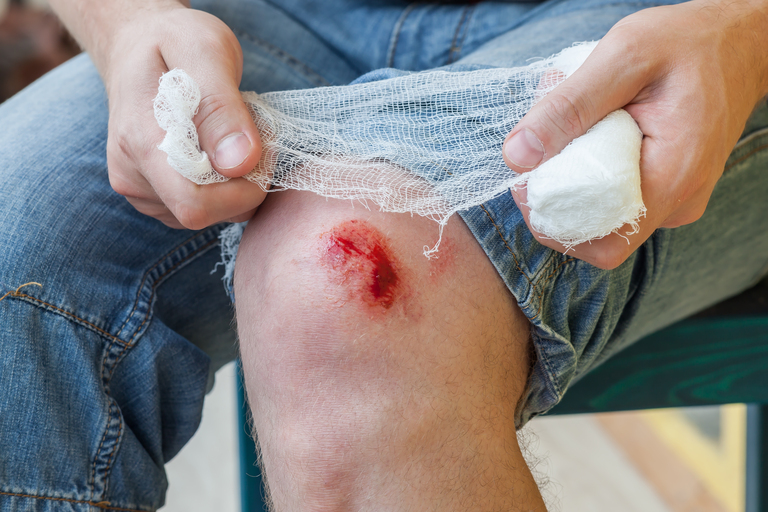

Las heridas son un problema de salud estrechamente vinculado a la práctica enfermera. Generalmente, las heridas son consideradas
como lesiones que afectan a la piel produciendo una pérdida de su integridad o una solución de continuidad de los tejidos: epidermis y dermi;
estas se caracterizan por la pérdida de la integridad de los tejidos blandos, producida por agentes externos, como un cuchillo, o por agentes
internos, como un hueso fracturado. La pérdida del ambiente es téril del interior hace que pueda producir una infección. La atención a personas
heridas, tanto con heridas agudas, casi siempre de origen traumático, como con heridas crónicas o úlceras,
forma parte habitual y frecuente de la práctica profesional de las enfermeras.
Las heridas se pueden clasificar en función del tiempo de evolución en heridas agudas, de corto tiempo de evolución, y en heridas crónicas, cuando persisten durante un período prolongado.
1. 𝐇𝐄𝐑𝐈𝐃𝐀𝐒 𝐀𝐆𝐔𝐃𝐀𝐒 Se caracterizan por la curación completa en el tiempo previsto y por no presentar complicaciones.
Hay diferentes tipos de heridas agudas: cortantes, contusas, punzantes, raspaduras, avulsivas, magulladuras, por aplastamientos y quemaduras

2. 𝐇𝐄𝐑𝐈𝐃𝐀𝐒 𝐂𝐑𝐎𝐍𝐈𝐂𝐀𝐒 Se caracterizan por mantener retraso en el tiempo de curación y la ausencia de crecimiento de los tejidos.
Se asocian a una excesiva inflamación y/o pobre perfusión de oxígeno. A veces, pueden aparecer enfermedades concomitantes. Las heridas crónicas
más frecuentes son las úlceras por presión, las úlceras vasculares (arteriales y venosas),
las úlceras neuropáticas (pie diabético) y las úlceras neoplásicas.
𝐓é𝐜𝐧𝐢𝐜𝐚𝐬 𝐚𝐯𝐚𝐧𝐳𝐚𝐝𝐚𝐬 𝐞𝐧 𝐞𝐥 𝐜𝐮𝐢𝐝𝐚𝐝𝐨 𝐝𝐞 𝐡𝐞𝐫𝐢𝐝𝐚𝐬
Constituyen todas aquellas tecnologías diferentes
a los apósitos especializados para el cierre de heridas agudas
o crónicas de difícil manejo. Entre estas tecnologías tenemos las siguientes
𝐒𝐢𝐬𝐭𝐞𝐦𝐚 𝐝𝐞 𝐩𝐫𝐞𝐬𝐢ó𝐧 𝐧𝐞𝐠𝐚𝐭𝐢𝐯𝐚 𝐨 𝐕𝐚𝐜𝐮𝐮𝐦 𝐀𝐬𝐬𝐢𝐬𝐭𝐞𝐝 𝐂𝐥𝐨𝐬𝐮𝐫𝐞 (𝐕𝐀𝐂®)
A principios de los años 90, Argenta y Morykwas introdujeron la terapia de presión negativa con la primera publicación en 1997. Ésta ha sido la mayor innovación en el manejo de heridas.
El dispositivo consiste en un adhesivo con un tubo conectado a un recipiente de recolección y una fuente de vacío. Se basa en el uso de presión negativa o subatmosférica para el manejo de heridas complejas que estimula la aparición del tejido de granulación y controla el exudado. La presión negativa sobre las heridas genera un aumento de mitosis y angiogénesis, lo que permite la contracción de la herida y aparición rápida de tejido de granulación.
𝐋𝐈𝐌𝐏𝐈𝐄𝐙𝐀 𝐃𝐄 𝐇𝐄𝐑𝐈𝐃𝐀𝐒
una herida afectada vista por primera vez: en este caso limpiaremos la herida con agua oxigenada
inspeccionando su interior para ver si existen cuerpos extraños, que retiraríamos con material apropiado;
se hará una limpieza lo más exhaustiva posible arrastrando el exudado con una gasa estéril y luego se procederá
a desifectarla definitivamente con un producto que no la coloree en exceso, puede utilizarse betadine, etc.; a
continuación cubrimos la herida con un apósito estéril sobre el que haremos un almohadillado con algodón para que
absorba los exudados y fijaremos todo esto a la piel con esparadrapo antialérgico.